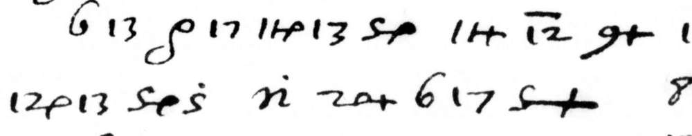
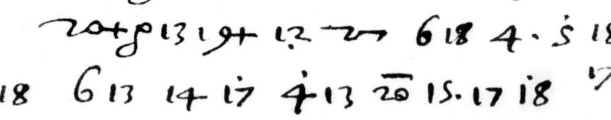
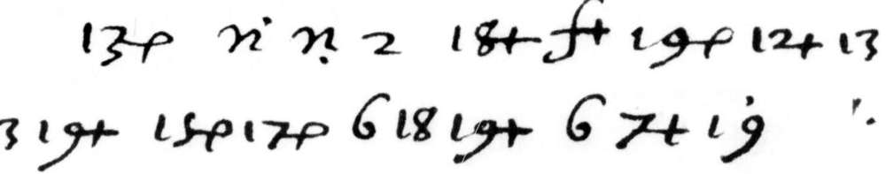

- Document
- Paris, BnF, ms. Espagnol 132 (Gallica
btv1b10032556x): the secret letters of Philip II and of his secretary Antonio Pérez to Juan de Vargas Mexía, Spanish ambassador in France, 1577 to 1580. Five pieces: Pérez to Vargas, Madrid, 13 September 1578 (f. 87), 8 December 1578 (f. 157) and 26 January 1579 (f. 179); Philip II to Vargas, March 1578 (f. 26r, first page only); a memorial in Italian of the Duke of Savoy (ff. 273-274). - New
- The readings of five pieces that no other project had. For the Pérez letters: the cipher passages (the plain Spanish is in print, with
[CIFRA]in place of every cipher passage). A few code values, each with its evidence. - Not ours
- The keys. J. P. Devos published the ciphers of Vargas Mexía in 1950, and S. Tomokiyo completed and broke the remaining ones in 2020. The project
el-descifrador/cabinet-noirpublished some code values of Pérez's private cipher on 2 October 2026. We applied these keys.
The keys
Both ciphers work in the same way. A figure stands for a consonant or a vowel. A small mark on the figure adds the vowel that follows. A few letter-like signs stand for a pair of consonants. The tables below are the tables of the two decoders, c2.py and c4.py; the notation of the marks is that of our transcription passes.
"Cipher 2" (Philip II, f. 26r; the memorial of Savoy)
| figure | 2 | 3 | 4 | 5 | 6 | 7 | 8 | 9 | 10 | 11 | 12 |
|---|---|---|---|---|---|---|---|---|---|---|---|
| letter | a | b | c | d | e | f | g | h | i | l | m |
| figure | 13 | 14 | 15 | 16 | 17 | 18 | 19 | 20 | 21 | 22 | 23 |
| letter | n | o | p | q | r | s | t | u | x | y | z |
| Mark, as we write it | Mark on the page | Vowel |
|---|---|---|
| p | a small hook like a rho, after the figure | a |
| + | a small cross after the figure | e |
| , | a dot below the figure | i |
| ' | a dot above the figure | o |
| . | a dot to the right of the figure | u |
Other signs: rho (a lone hook) = y; v = ll; n = pr; f = cr; p = tr; R = rr; 0+ = ss; a figure with a bar above (~) is a null; 16+ = que.
"Cipher 4" (the private cipher of Antonio Pérez)
| figure | 1 | 2 | 3 | 4 | 5 | 6 | 7 | 8 | 9 | 10 | 11 |
|---|---|---|---|---|---|---|---|---|---|---|---|
| letter | n | m | l | i | h | g | f | e | d | c | b |
| figure | 12 | 14 | 15 | 16 | 17 | 18 | 19 | 20 | 21 | 22 | 23 |
| letter | a | z | y | x | u | t | s | r | q | p | o |
| Mark, as we write it | Mark on the page | Vowel |
|---|---|---|
| . | a dot to the right | a |
| + | a small cross after the figure | e |
| , | a dot below | i |
| o | a hook like a 6 after the figure | o |
| ' | a dot above | u |
Other signs: y = a; a = u; o = o; a sign with a caret or an acute above (^) is a null; xe = V.m.; vo = Su Magestad.
Worked example
Philip II on Thomas Stukeley: f. 26r, lines 18 to 20 ("Cipher 2")
Each box holds one group of the first transcription pass and its value. The line under a group of boxes gives the word; the word division is ours.

The second pass has the same group in 16 of these 19 places.

The second pass has the same group in 16 of these 21 places.

The second pass has the same group in 18 of these 18 places.
[... que pensava levantar] en Yrlanda, le he mandado proveer de veynte mill escudos en oro, con persona propria, secretamente, para este efeto
[... some foot and horse] that he means to raise in Ireland. I have therefore ordered twenty thousand escudos in gold to be provided to him, by a man of my own, in secret, for this purpose.
One letter differs. In line 19 both passes have 15., which is "pu" by the key; the reading file writes "persona". The word "persona" runs over the end of line 19.
Antonio Pérez, 8 December 1578: f. 157r ("Cipher 4")
One cipher run inside clear Spanish: "... con la nueva orden que se ha dado de que no [cipher] sino solo [cipher]". The two passes have the same 16 groups. This page shows no image of the run; the leaf is view 154 of the Gallica scan.
de que no «aya ay Arcauti ni nadie» sino solo «[V.m.]»
[all will go better with the new order,] that neither Arcauti nor anyone else be there, but only you.
How sure
| Piece | Two transcription passes agree | Of 500 shuffled keys, as good as the true key |
|---|---|---|
| Pérez, f. 87 | 91.0 % | 0 |
| Pérez, f. 157 | 91.2 % | 0 |
| Pérez, f. 179 | 90.8 % | 0 |
| f. 26r | 80.0 % | 0 |
| ff. 273-274 | 80.0 to 87.2 % | 0 |
Outside check. No decipherment is on any of these leaves, and a search of the printed sources found no clear text. The content of the page of Philip II is known from the other side: the Calendar of State Papers, Rome, vol. 2, no. 770 (22 March 1578) has "the paymaster, who is the bearer of the 20,000 crowns" for Stukeley, under secrecy. The King's own words and motive are not in print.
What is not resolved
- For "Cipher 2" the passes differ in 13 to 20 % of the groups, mostly in the place of a dot. The differences were settled by sense and not by a third look at the image.
- f. 26 stops after line 27: ff. 26v to 31r are not in the Gallica scan.
- Eight code words of Pérez's cipher have no value, and two places on f. 87r are not resolved.
- For the Pérez letters the second pass was blind and the first was not.
- The Simancas minute of the letter of Philip II exists and was not seen.
Readings: reading_f26r.md, reading_perez_f87_f157_f179.md, reading_f273_274_savoy_memorial.md. Folder: espagnol-132.